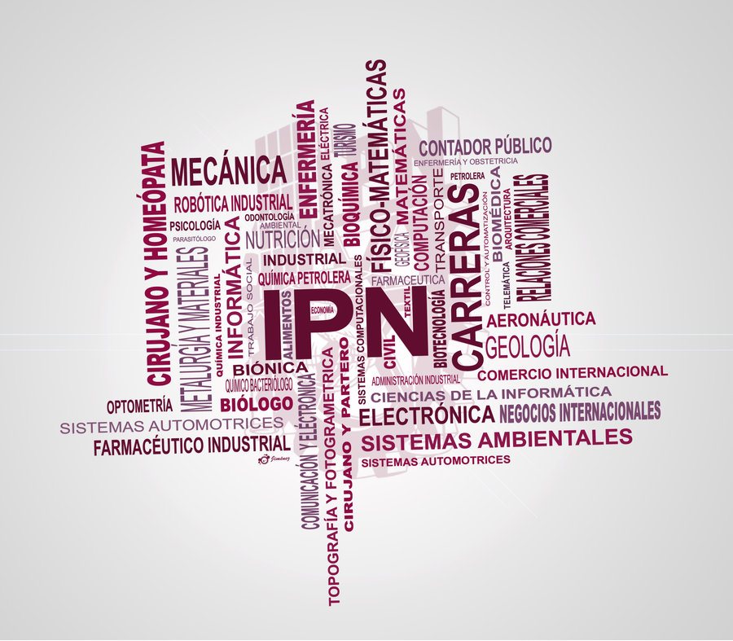

Ingeniería en Informática
Formar profesionistas con una sólida preparación científica y tecnológica de carácter interdisciplinario que les permita desarrollar habilidades para el diseño, construcción, transferencia y adaptación de tecnologías de información, cuya aplicación en el sector productivo coadyuve en el incremento de la calidad, productividad, factibilidad y sustentabilidad de sus productos y servicios.
Perfil de Aspirante
Para lograr una formación de recursos humanos de excelencia en la Carrera de Ingeniería en Informática, es indispensable que los aspirantes a cursar esta carrera reúnan un mínimo de conocimientos, habilidades, valores y actitudes que les garanticen su óptimo desempeño profesional durante sus estudios y los conduzcan a una exitosa integración en el campo profesional.
Perfil del Alumno de Nuevo Ingreso
De lo anterior se desprende que, un aspirante con vocación y aptitud para estudiar la Carrera de Ingeniería en Informática, deberá cumplir las siguientes características:
Conocimientos y Habilidades
Correspondientes al área de Ingeniería y Ciencias Físico-Matemáticas en el nivel medio superior.
Conocimientos generales del campo de la computación en lo relativo a manejo y uso de la computadora, paquetería básica, preferentemente sobre principios de programación.
Capacidad de abstracción y análisis que le permita desarrollar sistemas de información de acuerdo con situaciones específicas.
Hábito de autodidactismo, que le permita tener mejores posibilidades de éxito al estudiar.
Actitudes y Valores
Creatividad, que le facilite la innovación para el diseño y creación de nuevos sistemas de información computarizados.
Disposición para el estudio, lectura e investigación, que le permitan lograr éxito en sus estudios.
Poseer sentido de responsabilidad y tenacidad como persona y estudiante, que le asegure la consolidación de sus proyectos.
Identificarse con la filosofía del I.P.N., y con su entorno que le garanticen la formación de un profesionista comprometido con la sociedad y su país.
Requisitos Académicos
Cumplir en tiempo y forma con cada una de las etapas del Proceso de Admisión señaladas en la convocatoria de ingreso al Nivel Superior Sistema Escolarizado del IPN. Tales como:
Certificado oficial de estudios de nivel medio superior.
Certificado de estudios de secundaria.
Clave Única de Registro de Población (CURP).
Acta de nacimiento.
Aprobar el examen de ingreso.
6 fotografías tamaño infantil.
Perfil del Egresado
El estudiante que concluyan el programa académico 2009 dirá, que como Ingeniero en Informática, es un profesionista interdisciplinario, que laborar en cualquier tipo de organización pública o privada, donde implementa y administra sistemas de software de calidad mundial; proporciona soluciones de transmisión de voz y datos; aplica las metodologías de normalización y calidad en el proceso de desarrollo y administración de software y hardware garantizando su seguridad; y propone procesos planificados de innovación en el campo de la Ingeniería Informática a través de la investigación y desarrollo de soluciones de software y hardware, acordes a las necesidades actuales.
Campo Ocupacional
El egresado de este programa académico, podrá laborar en cualquier ámbito que requiera la construcción de soluciones de ingeniería informática que integren hardware y software, gestión de proyectos y fundamentalmente el desarrollo de software de clase mundial, seguro y con calidad, ya sea en el sector público ó privado.
Entre las características genéricas del campo ocupacional podemos encontrar empresas que cuenten con un área propia, o de outsourcing, que se dedique a:
Desarrollo de sistemas de software.
Soporte de sistemas en producción.
Implementación y soporte de redes y comunicaciones.
De éstas tres áreas se debe mencionar como puntos característicos del ámbito laboral a:
La construcción de soluciones de ingeniería informática.
La integración software-hardware.
La gestión de proyectos.
El desarrollo de software de calidad y de clase mundial.
Las empresas públicas y privadas.
UNIVERSIDADES
Instituto Politécnico Nacional (IPN)
UNIVERSIDAD POLITÉCNICA DE SINALOA